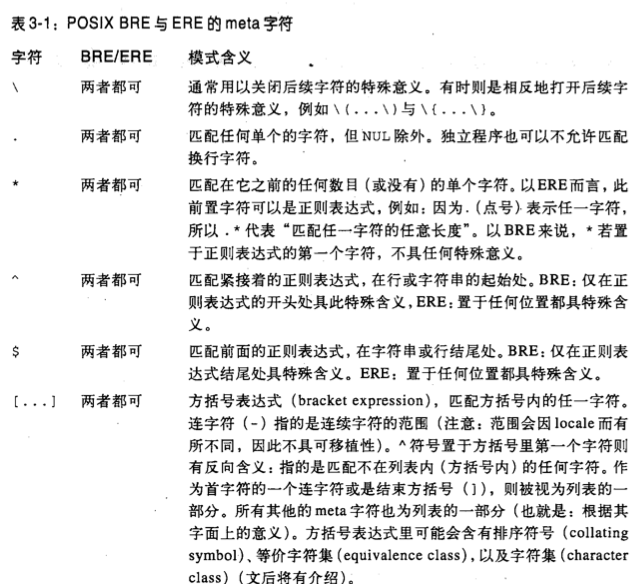
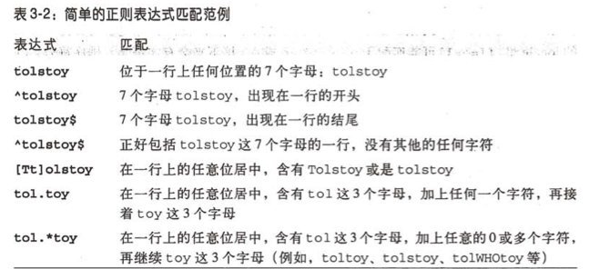

Created by 杨超
shell 简而言之，linux交互式的命令行解释器; 也泛指所有可在shell下运行的命令集合
目前unix/linux 默认使用bash 主要有3种:Bash/csh/ksh
说明：基本的I/O pipe 不再赘述 之前义哲的分享: http://wiki.sankuai.com/display/DEV/20140717-Basic+commands%2C+tools+sharing+101
1 专一: 一次只做一件事
2 处理文本 而不是 二进制内容
3 合理使用正则
4 三思而后行 可能可以用现有工具解决
正则: Regular Expression 主要分为两种:BRE/ERE 基本正则/扩展正则
正则的语法比较巧妙，而且BRE/ERE的区别也很"微妙", 建议选择一种喜欢的熟悉，否则容易迷惑 个人偏爱BRE，因为更简单
个人偏爱BRE(Basic Regular Expressions)，因为更简单
简单BRE语法规则，不限于此，但这些足够你解决日常80%的问题 

非常善于处理整行的数据, 花30分钟左右就可掌握基本语法
常用形式: sed [-n/-i] -e '[action]/[pattern]/[...]/[padding]' file
实例，批量替换 rc-www仓库中 所有php脚本中的一个字符串(OffsetModel)
非常善于处理列的数据，非常强大，经常结合sed/shell使用
awk 的语法跟c非常相似 awk '{action}' file
常用形式: awk '{print $0,$1-9,${11}} END{print NR}' file
demo1: 计算某个字符串出现的次数
demo2: 统计top10的命令
history | awk '{count[$2]++} END{for(a in count){printf("%s %d\n",a,count[a]);}}' | sort -nrk 2 | head
shell中的命令数以万计，而且自己也可以根据工作需要定制自己的常用命令，所以很多东西都可以组合起来使用;比如vi
演示一下vi中正则匹配替换
本身shell并不复杂，但是东西很多容易忘记，多练多想，需要耐心和毅力，天长日久自能融会贯通
推荐书籍:Shell脚本学习指南